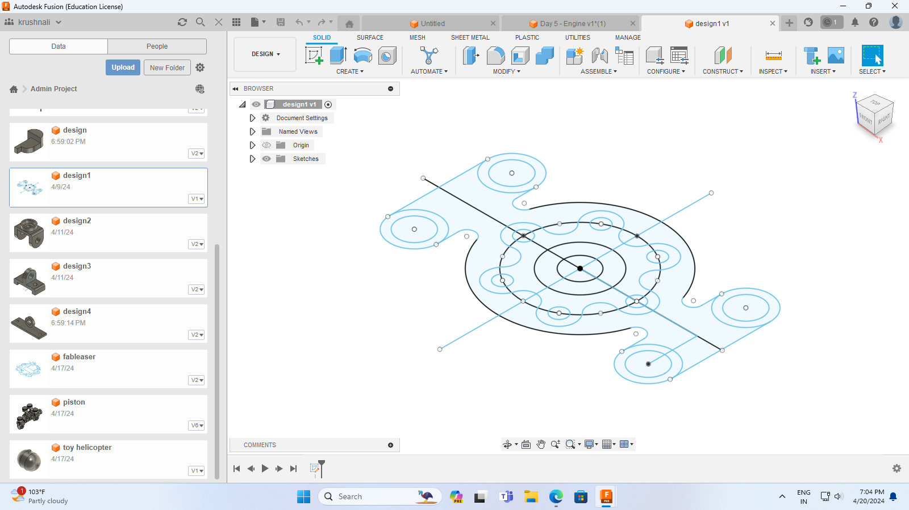
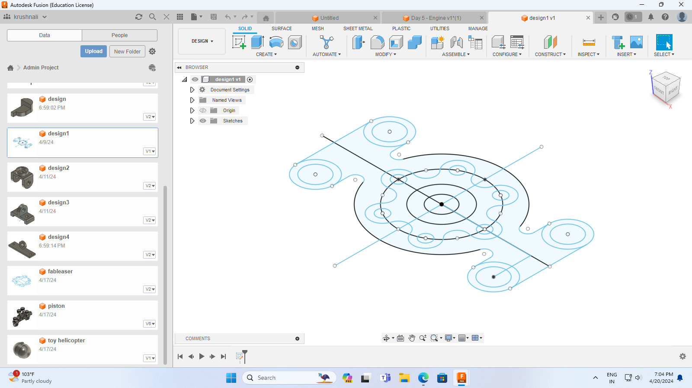
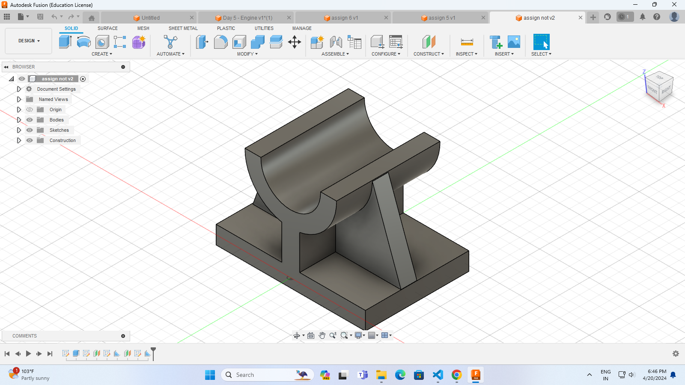
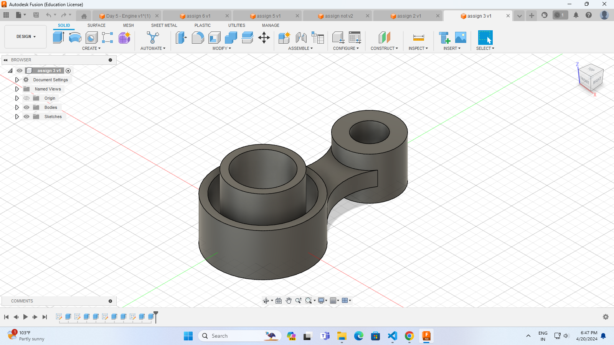
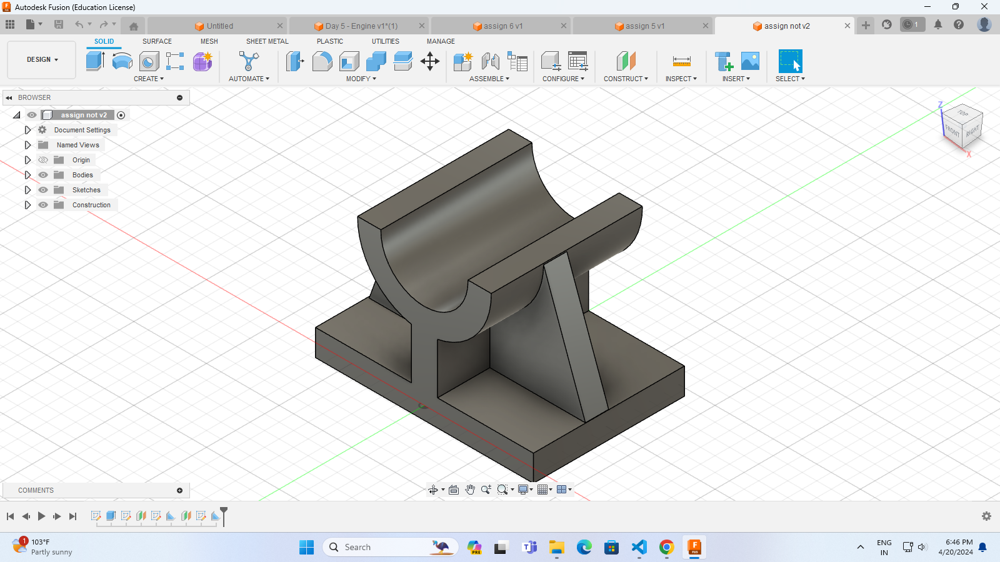
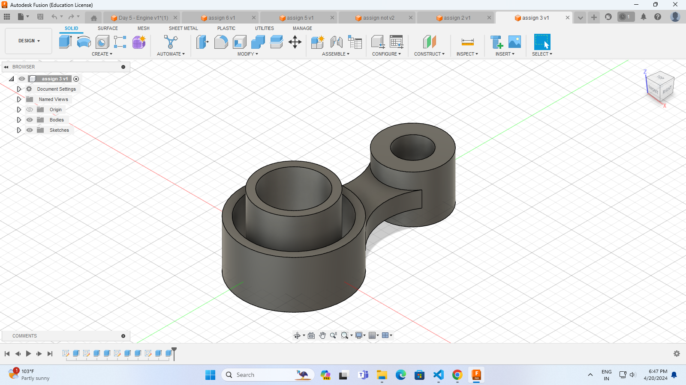

Day 1
The second module of the fab lab was Fusion 360
It follows by learning of commands like create sketch,changing dimension,extrude.
Sketches like ,line,arc, elispe, rectangle .
Day 2
The day 2 was started by understanding the commands like circular pattern,mirror,fillet,trim.
drawing a simple sketch shown as below
 

and a 3D drawing shown below img
Day 2 Assignments
Used Commands for assignments
circle, arc, hole, extrude, line


Day 3

The day 3 was started by exploring the 3D views
To make a 3D views extend command is important
 



PISTON
Parts of piston :-
1.Piston
2. Connecting rods
3. piston
4. Crant shaft
Animation applied:-
1. slider - used to slide the object (up-down) or(Backforth movement)
2. revolute - used to rotate the object.
BENCHWISE
Parts of BENCHWISE
1.BASE
2.VICE JAW
3.SCREW BAR
Animation applied
1.slider
2.Revolute
KNUCKLE JOINT
used circular pattern to create transverse cirular pitch of gear
Applied simply Move animation to circular pitch of gear